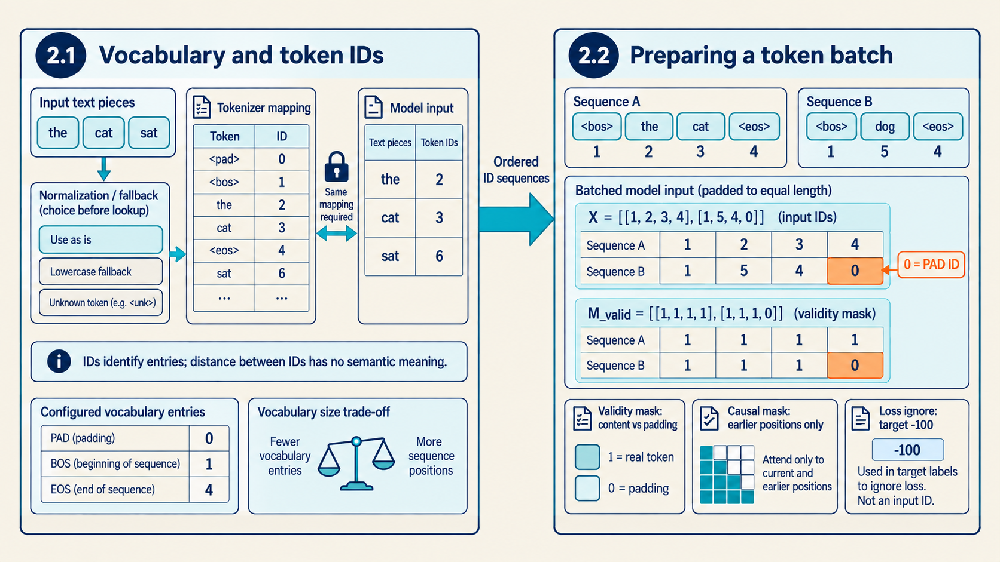

2 Token IDs and batches
A language model receives text through numerical representations. Each piece of text must first be associated with an integer the model recognizes. When several messages are processed together, their sequences of integers also need a layout that the numerical operations can use. The preparation must preserve both the identity of each token and the boundary between message content and any added placeholders.
Chapter 1 established which text supplies the input and which recorded tokens supply reference answers. A tokenizer prepares that text by dividing it into units and assigning their token IDs. Combining several sequences into a batch adds a second task: recording their lengths so a common storage layout preserves the meaning of each sequence.

The first panel follows text pieces into a sequence of IDs. The second shows how unequal sequences can share a rectangular layout, with a separate record of the positions added to fill shorter rows.
2.1 Vocabulary and token IDs
A token ID is useful only when the tokenizer and the model associate it with the same token. If the model learned that ID 1 represents cat, supplying ID 1 to mean dog changes the input it receives. The tokenizer used with a trained model must therefore preserve the token-to-ID mapping that the model expects.
A token is a unit in the text sequence, such as a character, word, part of a word, or punctuation mark. The vocabulary is the finite collection of tokens with assigned IDs. Let \(V\) denote the vocabulary, \(|V|\) its number of entries, and \(v_j\) the entry with index \(j\).
Indexed vocabulary:
\[ V = \{v_0,\ldots,v_{\lvert V\rvert-1}\} \tag{2.1}\]
The IDs run from \(0\) through \(|V|-1\). A next-token model with one output score per vocabulary entry has \(|V|\) possible choices. For example, a vocabulary of 50,000 entries requires 50,000 such scores. The same ID can select a stored numerical vector representing the token, as Chapter 13 explains. The ID identifies the entry, while the vector supplies values used in later calculations.
After the tokenizer has divided the text into pieces, vocabulary lookup converts each piece into its ID. In the following notation, \(s_t\) is the token string at position \(t\), \(x_t\) is its ID, and \(\operatorname{id}\) is the lookup function.
Token-to-ID mapping:
\[ x_t = \operatorname{id}(s_t) \tag{2.2}\]
Applying this lookup to each token preserves the order and number of tokens. The assigned integers identify vocabulary entries. Their size or numerical distance does not measure similarity between the corresponding words.
Example: Turning tokens into IDs
Consider the vocabulary \(V=\{\mathrm{the},\mathrm{cat},\mathrm{sat},\mathrm{dog}\}\), with IDs assigned in that order. Here \(|V|=4\), so a model scoring every vocabulary entry has four output choices.
Suppose the tokenizer divides cat sat into the two tokens cat and sat. Vocabulary lookup gives \(\operatorname{id}(\mathrm{cat})=1\) and \(\operatorname{id}(\mathrm{sat})=2\), producing the sequence \(x=(1,2)\).
Conclusion: The two IDs retain the order of the two tokens and identify them in this vocabulary. The meaning of ID 1 comes from its assignment to cat. Its numerical distance from ID 2 adds no information about the relationship between the words.
The choice of token units affects both vocabulary size and sequence length. A whole-word vocabulary can represent a familiar word in one position, but requires entries for the word forms it supports. A character vocabulary uses fewer entries and can compose unfamiliar words from known characters, at the cost of more positions per word. For example, the letters in raining occupy seven character positions, while a whole-word token occupies one. A subword tokenizer might use rain and ing, occupying two.
Word tokens retain familiar word boundaries. With character tokens, the model must learn useful combinations across more positions. Character tokenization can represent spelling variations and rare word forms when all their characters are supported. An unknown token, often written UNK, is a fallback used by some tokenizers when they cannot represent an input piece. Other tokenizers break unfamiliar text into smaller supported pieces or bytes. The available fallback depends on the tokenizer.
A rare technical term, a Hebrew word, a code identifier, or a biomedical string may require many small tokens. That increases sequence length and can increase the memory and computation needed to process the same text. A larger vocabulary can shorten sequences, but also enlarges the token-vector storage and the set of possible output scores. The balance depends on the text and model. Chapter 3 develops the subword methods that choose reusable pieces between characters and whole words.
Converting IDs back to vocabulary pieces is called tokenizer decoding. Chapter 7 uses generation decoding for the separate process of selecting output tokens from model scores. Recovering the original text also depends on any earlier normalization, a transformation that makes selected text forms consistent. Lowercasing or removing punctuation, for example, discards distinctions that decoding cannot recover. These transformations are tokenizer choices, not requirements for every language model. Case, spacing, and Unicode handling must match the tokenizer used to train the model.
A special token is a vocabulary entry that marks structure or serves a processing role. BOS and EOS mark the beginning and end of a sequence. PAD fills unused positions, and chat-role markers can distinguish speakers. These markers have vocabulary IDs too. Their presence and use depend on the model and tokenizer. Once all tokens and markers have IDs, messages of different lengths still need to be arranged for the chosen numerical computation.
2.2 Preparing a token batch
Suppose one tokenized message has four IDs and another has three. A Python list can store the two sequences as separate lists. Processing the messages together as one dense matrix requires a common row length. Numerical software can then apply operations across that rectangular array, which may process more messages per second on suitable hardware. The possible gain must be weighed against the extra storage and computation used to fill shorter rows.
PyTorch calls its arrays tensors. The token-ID tensor here is a matrix whose rows represent messages and whose columns represent token positions. A dense tensor stores a value at every coordinate of its shape. Reserving four positions for each of these two messages creates eight stored positions, although only seven belong to the original sequences.
Padding fills the remaining positions with a chosen token ID. The added positions make the storage rectangular while introducing work that may not help the prediction. Processing sequences separately, or grouping sequences of similar lengths, can reduce that overhead. Python can call accelerated tensor operations as well as store separate lists. Performance depends on the representation, operations, and hardware, rather than on the programming language alone.
Let \(B\) be the number of sequences in the batch and \(T\) the stored width of every row. One choice is to set \(T\) to the longest sequence in the current batch. A system with a fixed length limit may instead use truncation, which removes tokens beyond the retained span. Truncation can discard information needed for a prediction. Padding and truncation therefore address different needs: filling a storage layout and restricting the retained input length.
To use a padded batch correctly, the computation needs to know which positions belong to the original sequences. A padding mask records that distinction alongside the input IDs. In the convention used here, each retained position has value 1 and each added padding position has value 0. Let \(X\) contain the token IDs and \(M^{\mathrm{valid}}\) contain these mask values, both with \(B\) rows and \(T\) columns.
Token-ID batch and padding mask:
\[ X\in\{0,\ldots,\lvert V\rvert-1\}^{B\times T}, M^{\mathrm{valid}}\in\{0,1\}^{B\times T} \tag{2.3}\]
For batch row \(b\) and position \(t\), \(X_{b,t}\) is a vocabulary ID and \(m_{b,t}\) records whether that position was retained from the sequence. Every ID remains within the vocabulary, including the ID used for padding. The mask identifies inserted positions even when padding reuses an ID that also occurs in the original text.
Example: Preparing two unequal sequences
Use a vocabulary in which PAD is 0, BOS is 1, the is 2, cat is 3, EOS is 4, and dog is 5. This vocabulary is separate from the four-entry vocabulary in Section 2.1. The first message is \([1,2,3,4]\) and the second is \([1,5,4]\). Their boundary markers are part of the retained sequences.
With \(B=2\) and \(T=4\), right padding gives \(X=[[1,2,3,4],[1,5,4,0]]\). The corresponding mask is \(M^{\mathrm{valid}}=[[1,1,1,1],[1,1,1,0]]\). The added PAD occupies \(X_{2,4}\) and is identified by \(m_{2,4}=0\).
Conclusion: Both rows now have the same stored width, so they can form one dense \([2,4]\) tensor. Seven of its eight positions belong to the original sequences. The mask preserves that distinction, including the real BOS and EOS markers. With Python’s zero-based indexing, the added position is accessed as [1, 3].
The tokenizer or batch-preparation operation constructs the mask while it knows which positions it has added. The rule can be written as follows, with \(b\) identifying the row and \(t\) the position within it.
Padding-mask values:
\[ m_{b,t}=\begin{cases}1,&\text{retained position},\\0,&\text{padding position}\end{cases} \tag{2.4}\]
The retained sequence includes any boundary markers already present before padding. The EOS position in the short message therefore has mask value 1, while the following PAD position has value 0. In this simple example, counting the ones in a row recovers its retained sequence length.
When PAD has its own ID, checking for that ID can identify padding. Some tokenizers instead use the EOS ID as the padding value. A real end marker and an added placeholder then contain the same integer. The mask distinguishes their roles because it records where padding was inserted. Comparing IDs alone cannot recover that information.
The receiving model must use the mask for it to affect the calculation. The tokenizer interface used below calls this array attention_mask. Attention is the mechanism that lets one token’s calculation use information from other positions. A model can use the padding mask to prevent added positions from contributing as context. Creating the array by itself does not change which positions the model uses.
Next-token prediction imposes another restriction: the input at a position can include preceding tokens but cannot include the future token it is supposed to predict. A causal attention mask expresses that restriction between positions. Chapter 16 explains its calculation. Padding validity and causal visibility are separate conditions, and a model may need both. A special MASK token, used in some other prediction tasks to replace hidden text, is a vocabulary entry rather than either of these control arrays.
Training later compares predictions with reference answers, but added padding positions have no reference answer. The input mask identifies those positions. For the PyTorch cross-entropy calculation developed in §8.5, an ignore value of -100 in the target array tells the loss calculation to omit such a target.
Let \(label_{b,t}\) be the value supplied in the training-target array for row \(b\), position \(t\). The following preparation rule replaces target values at padding positions with the ignore value.
Ignoring padding in the training targets:
\[ label_{b,t}=-100\quad\text{when }m_{b,t}=0 \tag{2.5}\]
The input array keeps valid vocabulary IDs. The separate target array can use -100 at positions added for padding. §8.5 calculates which next-token comparisons remain and how their losses are averaged.
The following code assembles a batch for a GPT-2 tokenizer. The Python software library transformers provides AutoTokenizer, an interface that loads the tokenizer associated with a model. The numerical library PyTorch, used elsewhere as torch, stores the resulting arrays. Passing return_tensors="pt" requests that tensor format.
This example requires the two libraries and either cached GPT-2 tokenizer files or access to download them. It loads tokenizer data and prepares a batch, without running or training the language model. GPT-2 uses byte-level BPE to turn the text into IDs, as §3.1 explains. The three input messages are the cat sat, the dog ran, and the shorter dog. Setting padding=True chooses the longest tokenized message as the batch width, \(T_{\max}\). EOS is used as the padding value in this example.
Code example: Tokenizer batch with padding and mask
from transformers import AutoTokenizer
texts = ["the cat sat", "the dog ran", "dog"]
tokenizer = AutoTokenizer.from_pretrained(
"gpt2", revision="607a30d783dfa663caf39e06633721c8d4cfcd7e"
)
tokenizer.pad_token = tokenizer.eos_token
batch = tokenizer(texts, padding=True, return_tensors="pt")
input_ids = batch["input_ids"] # [B, T_max]
attention_mask = batch["attention_mask"] # [B, T_max]
labels = input_ids.clone()
# Chapter 8 explains how these labels enter the loss.
labels[attention_mask == 0] = -100
assert input_ids.shape[0] == 3
assert (attention_mask == 0).any()
print(input_ids)
print(attention_mask)The returned input_ids and attention_mask have the same shape, \([B,T_{\max}]\). The first assertion checks that the batch has three rows. The second checks that at least one padding position was added. The code copies the input IDs into labels, then sets padded target positions to -100 using the mask. Copying keeps the input IDs unchanged.
The copied labels prepare this right-padded batch for a model interface that aligns each prediction with the following token internally. §8.5 checks that alignment, its loss count, and the different rule needed when padding is placed on the left. The arrays produced here record position validity for that later calculation.
Conclusion: The code produces a rectangular input batch and two forms of control information. The padding mask identifies the inserted input positions. The ignore value excludes padded target positions from training loss. Preserving these distinctions allows messages of different lengths to share a storage layout without treating added placeholders as original text.
The vocabulary now identifies each token with an integer, and the batch records both the stored width and the retained positions. Chapter 3 develops the remaining vocabulary choice: how reusable subword pieces balance the number of entries against the length of token sequences.
Chapter checkpoint
One short message and one longer message are padded using the EOS ID. Checking for that ID is proposed as a way to find the added positions. Why is the check insufficient? What does \(T\) mean in the resulting \([B,T]\) batch, and what information must reach the attention and loss calculations?
Answer: EOS can mark a real sequence boundary or fill an added position, so its ID alone does not identify padding. The mask constructed during padding records which role each position has. \(T\) is the number of stored positions in every row. The model must use the padding mask when deciding which positions can contribute as context. The training loss needs its own exclusion rule, such as ignored target values at padded positions. Chapter 8 explains that loss calculation.